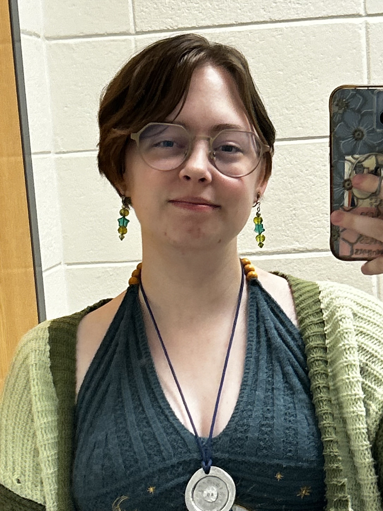
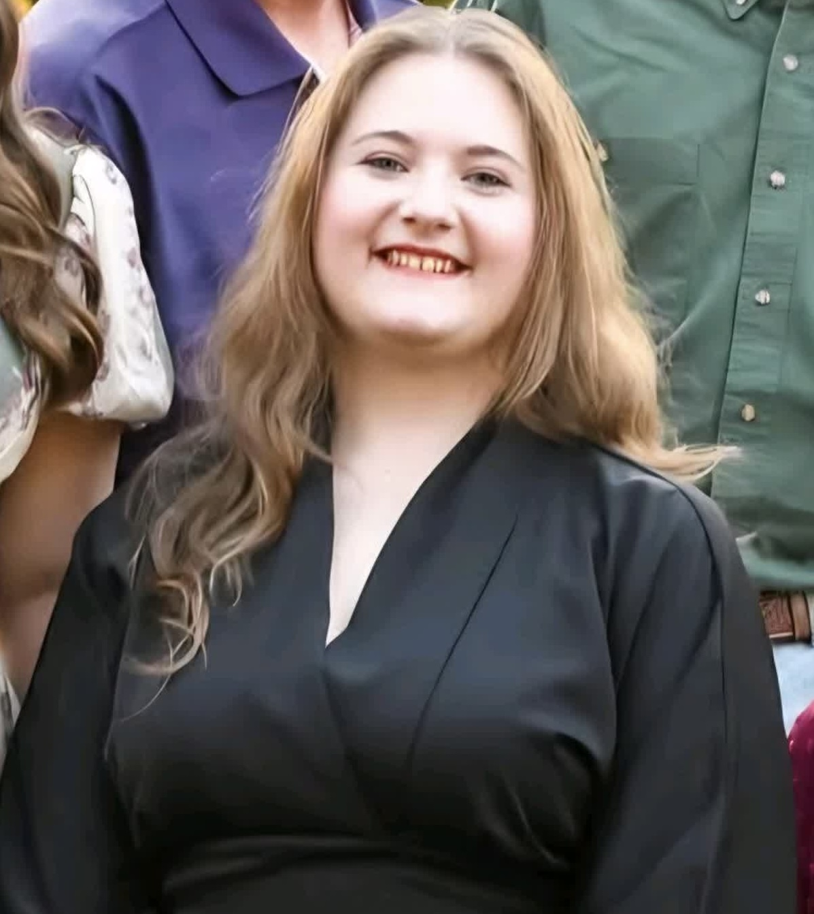
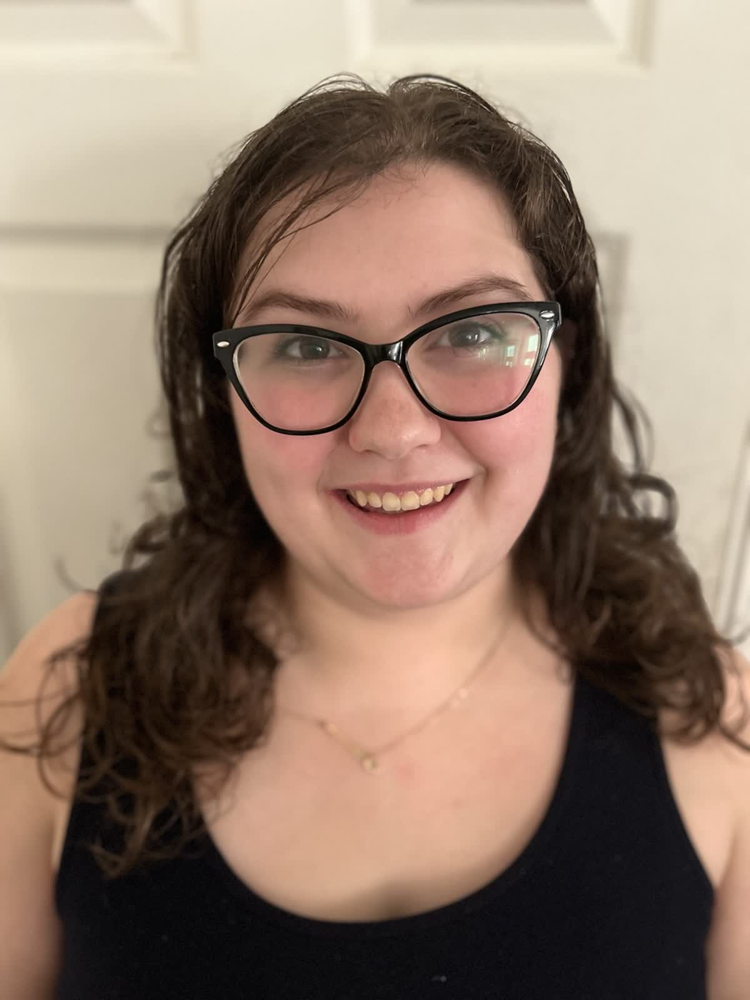

"Hello, Im Jerrica Bradley, a Fine Arts Major and Freshmen at GSW. I wanted to help create this website to test my skills and help others be more aware and recognize the deeper meanings in art and literature. I had the job of coding the website, .and setting it up, I beleive I've reached my own expectations in this project we shared, and hope you enjoy it as well."
"I'm Allison "Ozzy" Osborne and I am a Freshman Arts Major at GSW! I wanted to create this website because so many books and pieces of art have deeper meanings within them. They are tools we use to critique the world we live in and it's important to pay attention to the messages they want to tell."
My name is Laney Eubanks, and I am an 18 year old freshmen enrolled in the BFA (Bachelor of Fine Arts) program here at GSW. I am originally from Naples, Florida, the very southwestern tip of the state, though I moved here to Americus in 2018. My part in this project was writing and revising (almost) all of the words you see on this website. From the introduction to the FAQ! Part of why I was excited to get involved in this project was because I believe critical thinking is a quickly disappearing skill, and one that we need to fight to retain. Additionally, I love creating immense depth and metaphors out of my personal works! In my spare time, I enjoy writing short stories, creating characters, and writing really grungy, tragic DND campaigns!
My name is Natalie Heath! I am a 19-year-old Pre-Pharmacy student, and I’m a freshman at Georgia Southwestern State University. I am originally from Albany, Georgia, but now I live here in Americus. I have always been interested in writing from a young age, and I have always loved to read a little too far into the material I was consuming. This is why I fell in love with the idea for this project. I absolutely adored the idea of sparking the same love I have in analyzing media and art in other people, and I truly hope we will be able to accomplish this feat together.